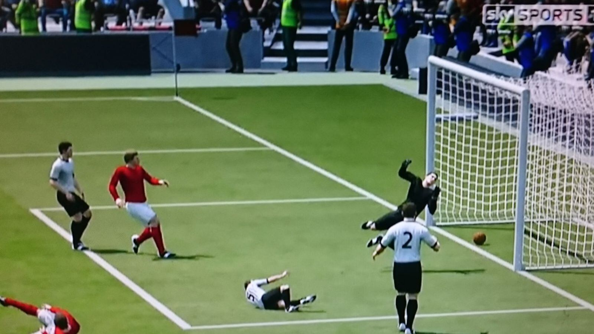

8.ª edición
Primera copa inglesa
Copa Mundial de la FIFA Inglaterra 1966
11 – 30 de julio de 1966
País sede: Inglaterra 🏴
16 selecciones
32 partidos
Datos generales del torneo
- País sede: Inglaterra 🏴
- Ciudades sede: Londres, Manchester, Liverpool, Birmingham, Sheffield, Sunderland, Middlesbrough
- Estadios: 8 (incluyendo Wembley Stadium)
- Selecciones participantes: 16
- Partidos jugados: 32
- Goles anotados: 89
- Campeón: Inglaterra 🏴
- Subcampeón: Alemania Federal 🇩🇪
- Tercer lugar: Portugal 🇵🇹
- Cuarto lugar: Unión Soviética 🇷🇺
- Máximo goleador: Eusébio (9 goles)
- Mejor jugador: Bobby Charlton
Jugadas y momentos destacados
El Mundial 1966 dejó momentos icónicos, incluyendo el famoso “gol fantasma” de Geoff Hurst en la final,
los 9 goles de Eusébio y la sorprendente actuación de Corea del Norte llegando a cuartos de final.

Resumen del torneo
-
Inglaterra organizó su primer Mundial y culminó levantando la copa en Wembley,
su único título mundialista hasta la fecha.
-
El portugués Eusébio brilló con 9 goles, liderando a su selección hasta el tercer lugar.
-
Corea del Norte sorprendió al mundo eliminando a Italia y clasificando a cuartos.
-
La final Inglaterra vs Alemania Federal es una de las más famosas de la historia,
marcada por el polémico gol de Hurst que aún genera debate.
Fase final (últimos 4)
Semifinales
- 🏴 Inglaterra 2–1 Portugal 🇵🇹
- 🇩🇪 Alemania Federal 2–1 Unión Soviética 🇷🇺
Tercer lugar
- 🇵🇹 Portugal 2–1 Unión Soviética 🇷🇺
Final
- 🏴 Inglaterra 4–2 🇩🇪 Alemania Federal
AET — Hurst marcó un hat-trick
Selecciones participantes por grupo
Grupo A
- 🏴 Inglaterra
- 🇺🇾 Uruguay
- 🇲🇽 México
- 🇫🇷 Francia
Grupo B
- 🇩🇪 Alemania Federal
- 🇨🇭 Suiza
- 🇦🇷 Argentina
- 🇪🇸 España
Grupo C
- 🇵🇹 Portugal
- 🇭🇺 Hungría
- 🇧🇬 Bulgaria
- 🇧🇷 Brasil
Grupo D
- 🇮🇹 Italia
- 🇨🇱 Chile
- 🇰🇷 Corea del Norte
- 🇷🇺 Unión Soviética
Final: Inglaterra vs Alemania Federal
La final del Mundial 1966 es recordada por el hat-trick de Geoff Hurst —el único en una final—
y por el “gol fantasma”, una jugada que ha sido objeto de debate durante décadas.
Inglaterra 🏴 – Alineación titular
- DT: Alf Ramsey
- Gordon Banks (POR)
- George Cohen
- Jack Charlton
- Bobby Moore (C)
- Ray Wilson
- Nobby Stiles
- Alan Ball
- Martin Peters
- Bobby Charlton
- Geoff Hurst
- Roger Hunt
Alemania Federal 🇩🇪 – Alineación titular
- DT: Helmut Schön
- Hans Tilkowski (POR)
- Horst-Dieter Höttges
- Willi Schulz
- Karl-Heinz Schnellinger
- Franz Beckenbauer
- Wolfgang Weber
- Herbert Wimmer
- Sigfried Held
- Helmut Haller
- Uwe Seeler (C)
- Franz Brungs
Reseña general
Inglaterra 1966 fue un torneo marcado por calidad táctica, defensas sólidas y la aparición de grandes figuras
como Bobby Charlton, Beckenbauer y Eusébio.
El torneo también es famoso por varias polémicas, desde arbitrajes discutidos hasta el caso del robo de la
Copa Jules Rimet, posteriormente hallada por un perro llamado “Pickles”.